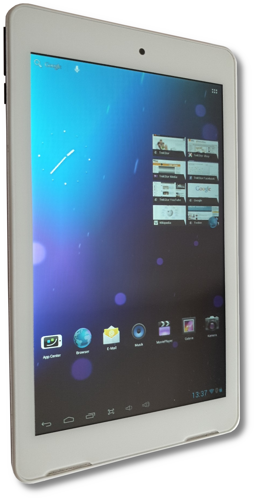

TrekStor SurfTab ventos 7.0 HD (mid-g30ref)
Jump to navigation
Jump to search
| Note: There are a number of similar devices with this SoC which might also apply to this page. They are usually called "MID" (Multimedia Internet Device) and have a lot in common. |
|
 TrekStor SurfTab ventos 7.0 HD | |
| Manufacturer | TrekStor |
|---|---|
| Name | SurfTab ventos 7.0 HD |
| Codename | mid-g30ref |
| Released | 2013 |
| Category | testing |
| Original software | Android 4.1.1 |
| Hardware | |
| Chipset | Amlogic AML8726-MX |
| CPU | Dual-core 1.5 GHz Cortex-A9 |
| GPU | Mali-400 MP2 |
| Display | 1280 x 800 (IPS LCD, 7.0") |
| Storage | 8/16 GB |
| Memory | 1 GB |
| Architecture | armv7 |
{kind=link}
| USB Networking | |
|---|---|
| Flashing | |
| Touchscreen | |
| Display | |
| WiFi | |
| FDE | |
| Mainline |
Broken
|
| Battery | |
| 3D Acceleration | |
| Audio | |
| Bluetooth | |
| Camera | |
| GPS |
Unavailable
|
| Mobile data |
Unavailable
|
| SMS |
Unavailable
|
| Calls |
Unavailable
|
| USB OTG | |
| NFC |
Unavailable
|
| Accelerometer | |
|---|---|
| Magnetometer | |
| Ambient Light | |
| Proximity | |
| Hall Effect | |
| Barometer | |
| Power Sensor | |
| Camera Flash | |
|---|---|
| Keyboard | |
| Touchpad | |
| USB-A | |
| HDMI/DP | |
| Ir TX |
Unavailable
|
| Ir RX | |
| Stylus | |
| Haptics | |
| Ethernet | |
| FOSS bootloader | |
Contributors
Users owning this device
- Ungeskriptet (Notes: Cracked glass)
How to enter flash mode
- Recovery: Power on the device with both Power and Volume Down buttons.
-
U-Boot: U-Boot can be interrupted by holding
Ctrl + Cin the serial console when booting the device
Installation
Loading Linux from U-Boot
The U-Boot on this device tries to look for files called aml_autoscript (which is just a normal U-Boot script), uImage_recovery or recovery.img on a FAT32 formatted SD card when holding the recovery key combination. In our case, when can simply create a script which will load the kernel and the initial ramdisk from the same SD card like this:
- Create the script:
uboot-script.cmd
setenv bootargs "init=/init.sh rw earlycon console=ttyAML0,115200 no_console_suspend PMOS_NO_OUTPUT_REDIRECT" fatload mmc 0 0x82000000 uImage fatload mmc 0 0x83000000 uInitrd bootm 0x82000000 0x83000000
- Compile the script:
mkimage -A arm -O linux -T script -C none -a 0 -e 0 -n postmarketOS -d uboot-script.cmd aml_autoscript - Compile the kernel and generate a ramdisk which are both legacy U-Boot compatible. The kernel must be named
uImageand the ramdiskuInitrd. - Copy
aml_autoscript,uImageanduInitrdto the root of a FAT32 formatted SD card and insert it into the tablet. - Boot the device with the recovery key combination.
Note: It could be possible to store the kernel and ramdisk in the form of an Android boot image in the boot partition of the NAND to boot automatically, however this way hasn't been discovered yet. |
UART
The back cover is clipped to the screen without screws and can be pried open with a tool between the metal and plastic frame. The UART pads are located on the lower left half and are kindly labeled.
| Note: Be careful when clipping the back cover back on, the front glass can break easily. |
{kind=link}
Hardware status (mainline)
| Component | Model | Status | Notes |
|---|---|---|---|
| SoC | Amlogic AML8726-MX | P | Support exists in mainline (Codename meson6)
|
| UART | - | P | Output gets garbled after UART driver loads (Clock issue?) |
| MicroUSB | - | N | USB 2.0 |
| NAND Flash | Micron MT29F64G08CBABA | N | 8 GiB |
| SPI NOR Flash | PM25LQ032C | N | 4096 KiB |
| Charging | Uses PMIC | N | |
| PMIC | XPowers AXP202 | N | |
| Volume/Power/Home keys | - | N | GPIO |
| Touchscreen | FocalTech FT5x06 | N | |
| Accelerometer | STMicroelectronics lis3dh | N | |
| Display | LVDS | N | |
| Audio | Amlogic AMLWM8960 | N | |
| GPU | Mali-400 MP2 | N | |
| Wi-Fi/Bluetooth | Realtek RTL8723AU | N | Connected internally via USB |
| Front camera | GalaxyCore GC2035 | N | |
| Main camera | GalaxyCore GC0308 | N | |
| HDMI | Unknown | N |